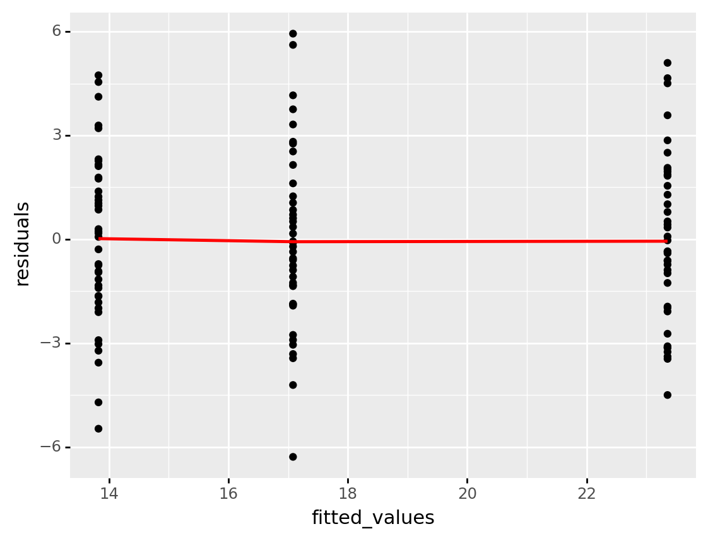
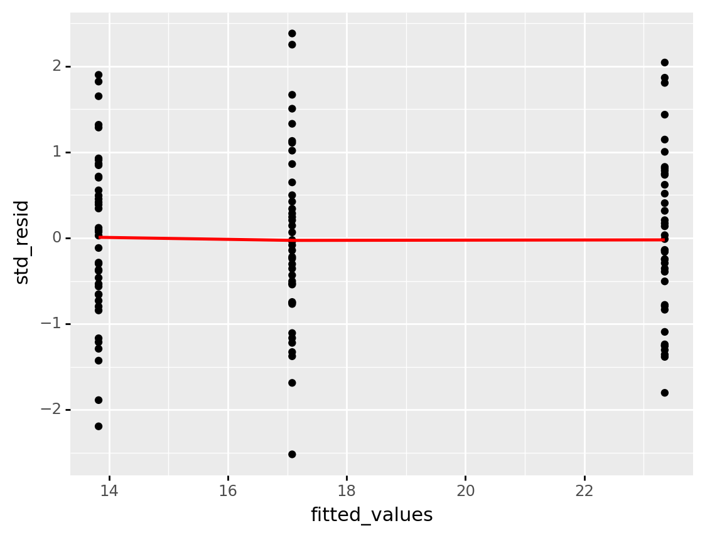
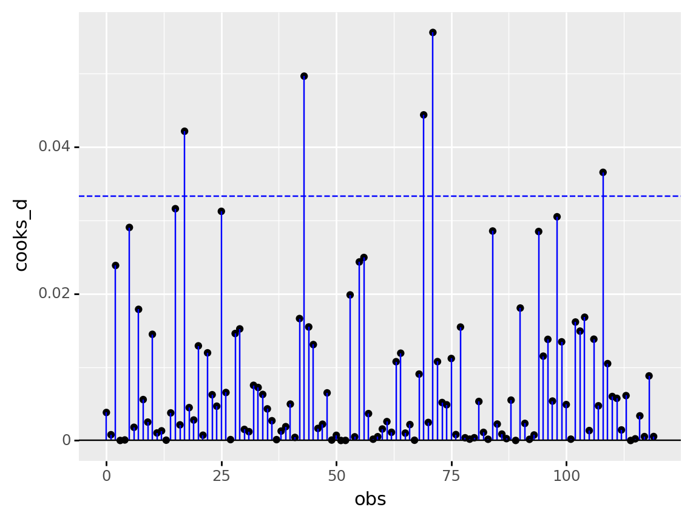
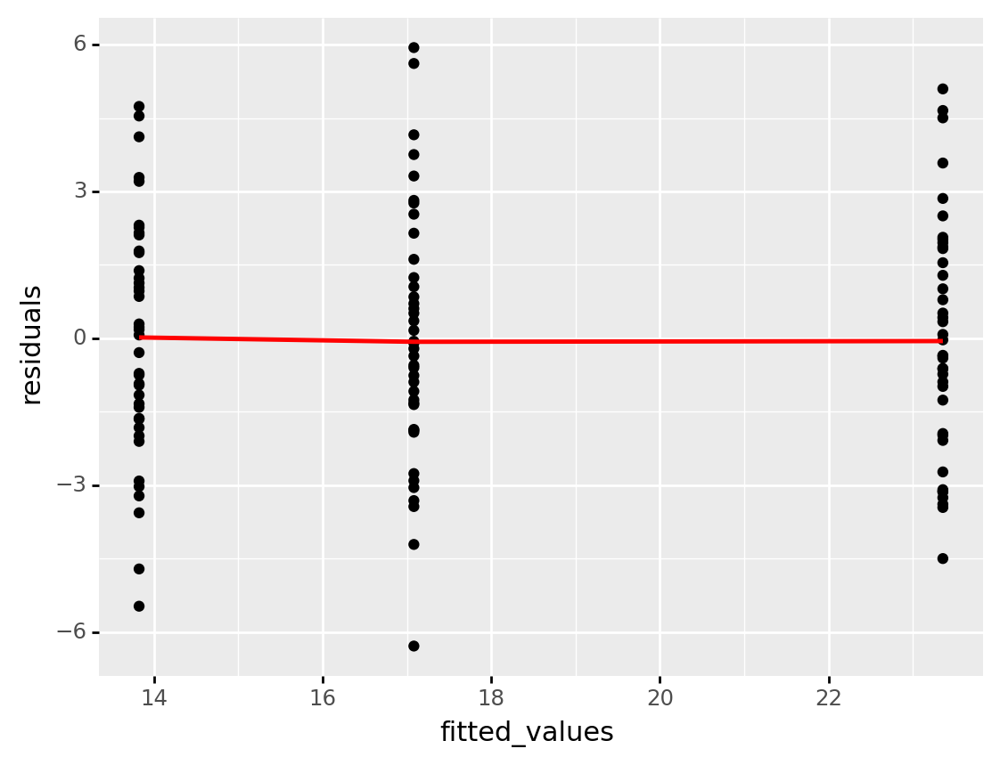
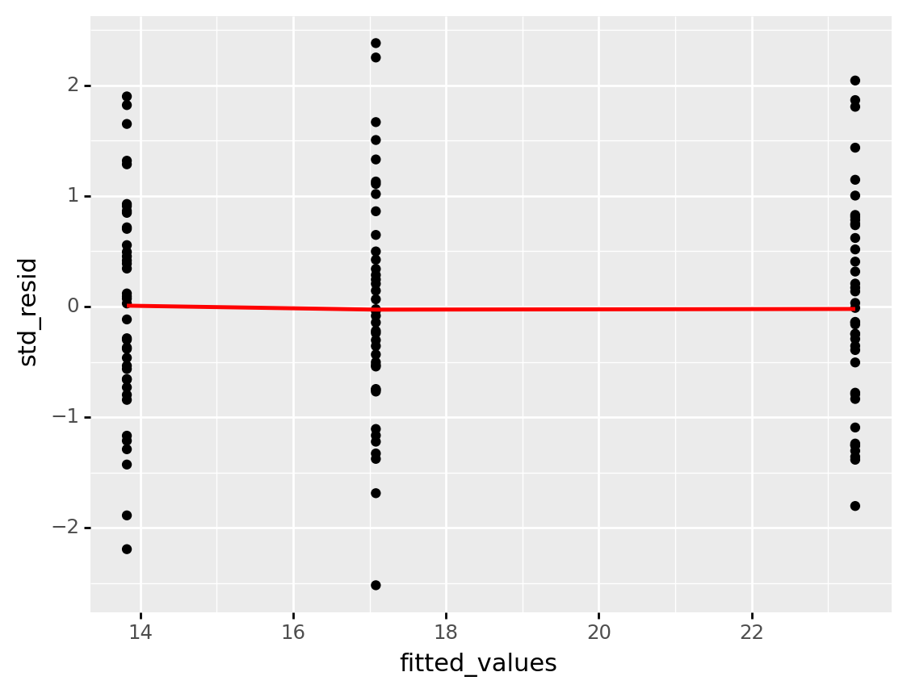
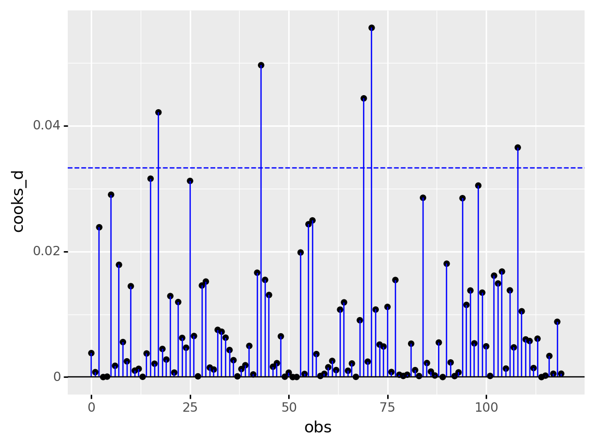

<Figure size 72x72 with 0 Axes>area_51
Q-Q plot

<ggplot: (346219133)>Residual plot

<ggplot: (346229637)>Location-Scale plot

<ggplot: (346334413)>Cook’s distance

<ggplot: (346359772)>

<Figure size 72x72 with 0 Axes>
<ggplot: (346219133)>
<ggplot: (346229637)>
<ggplot: (346334413)>
<ggplot: (346359772)>